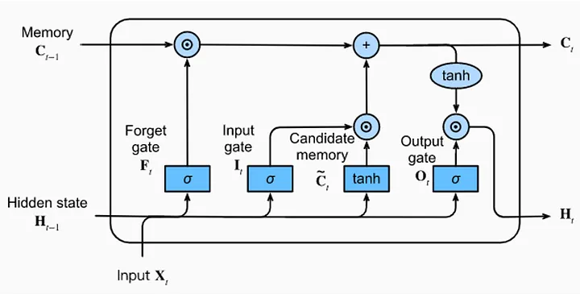

研究問題
位置隱私
停車推薦需要使用行動軌跡與地理資訊，但原始位置資料不適合集中上傳與保存。
資料異質性
不同使用者的移動模式差異大，Non-IID 資料會影響全域模型穩定度。
Case Study 02
以 Federated Learning、Differential Privacy 與 LSTM 預測停車需求，在保護位置隱私的前提下改善個人化推薦效果。

停車推薦需要使用行動軌跡與地理資訊，但原始位置資料不適合集中上傳與保存。
不同使用者的移動模式差異大，Non-IID 資料會影響全域模型穩定度。
使用 LSTM 捕捉停車需求與時間序列特徵，並以 RMSE / R2 觀察預測品質。

讓模型在本地端訓練並聚合權重，減少原始資料流出，同時處理使用者端資料分布差異。

加入位置混淆與差分隱私機制，再透過 IoU overlap 等指標檢查推論攻擊下的保護程度。


使用 RMSE、R2 與重疊率檢視模型效能與隱私保護效果，並比較集中式、聯邦式與加權式策略。